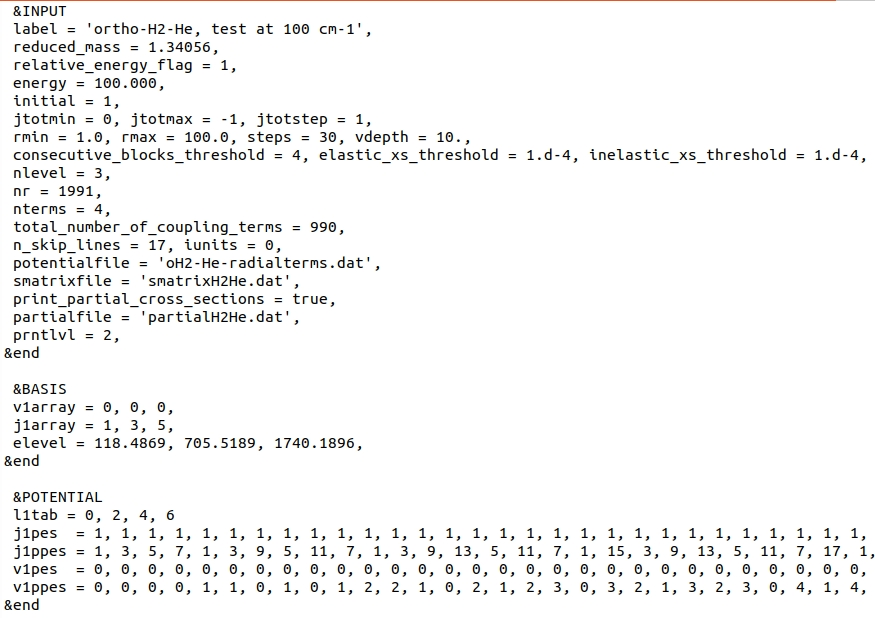
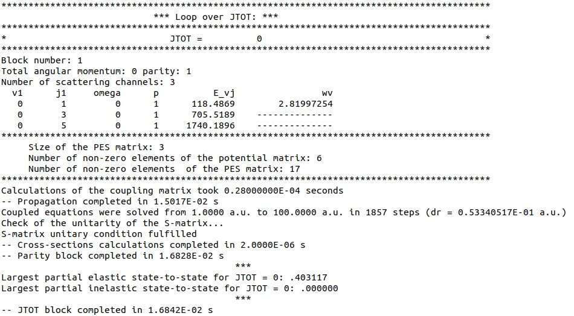
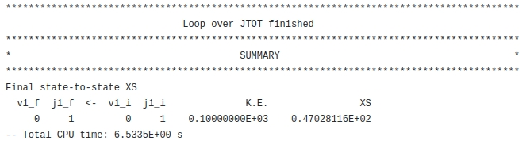

Elastic scattering of ortho-H2
- Hubert Jóźwiak
Input file
The input file can be found here.
Below, we provide the screenshot of this file.

In this test, we choose to define collision energy through kinetic energy by setting relative_energy_flag
and initial to 1: variable energy is thus interpreted as kinetic energy,
calculated with respect to the \(v=0, j=1\) level.
The total energy of the system is thus \(E_{\mathrm{tot}} = 218.4869\) cm\(^{-1}\).
Since jtotmax is set to -1, calculations will be performed until
4 consecutive blocks will contribute to the elastic state-to-state cross-section by less than \(10^{-4} Å^{2}\), as set by
consecutive_blocks_threshold and elastic_xs_threshold.
Because no other levels are accessible at this kinetic energy, the other threshold condition, set by inelastic_xs_threshold
will be ignored.
nlevel = 3 indicates that there are only 3 rovibrational levels of H2 in the basis.
Vibrational and rotational quantum numbers, as well as corresponding internal energies of these levels are provided in the BASIS Namelist, through
v1array, j1array and elevel arrays.
The next 6 variables provide information about the radial coupling terms file:
- nr = 1991 means that the grid of intermolecular distances cover 1991 points;
- nterms = 4 means that 4 terms in the Legendre expansion over \(\lambda)) are provided;
- total_number_of_coupling_terms = 990 means that the file provides a total number of column-ordered 990 terms coupling different rovibrational levels. Note that this does not mean that all of them will be used in the calculations. In fact, since only 3 rovibrational levels are provided, only 6 terms will be used.
- n_skip_lines = 17 means that the first 17 lines of the radial terms file will be skipped upon read.
- iunits = 0 to be removed.
- potentialfile - name of the file with the radial coupling terms of the PES.
S-matrices and partial state-to-state cross-sections will be saved to "smatrixH2He.dat" and "partialH2He.dat" files. The latter is a text-format file which can be accessed here.
Namelist POTENTIAL provides variables that handle interpreting radial coupling terms file.
l1tab is 4-element array which holds \(\lambda\) indices of the PES expansion (up to \(\lambda=6\)).
The next four arrays allow for the identification of each column in the "oH2-He-radialterms.dat" file. For instance, the first column with the coupling terms, corresponds to the
\(\eta = v=0, j=1\) and \(\eta^{\prime} = v^{\prime}=0, j^{\prime}=1\) term, which drives elastic scattering in the \( v=0, j=1\) level.
Reading the four arrays element-by-element allows for a correct identification of each column in the "oH2-He-radialterms.dat" file.
Output file
The output file can be found here.
Input parameters are summarized at the beginning of the file:
 .
.
Each total angular momentum block is succintly summarized as follows:
.
More information (in particular, S-matrix elements) are provided if prntlvl is set to a larger value.
The loop over total angular momentum is terminated at \(J = 34\). Since only one level, \(v=0, j=1\) is energetically accessible, there is only one, elastic cross-section. Its total value is printed at the bottom of the output file.
.
Other files
Apart from the output file, calculations prod uce the file with partial state-to-state cross-sections, which is available here, and the binary S-matrix file here. The latter one needs a post-processor to read and interpret the saved data.
Comparison with MOLSCAT
<<<<<<< HEAD <<<<<<< HEADA correspodning MOLSCAT test is provided here.
Due to MOLSCAT's large computational time for itype = 7 with a large number of coupling terms, I have run parallel calculations for each JTOT block.
pre_oH2He7.in is a template input file. Each task in the job array modifies "jtotl" and "jtotu" values, to run one JTOT block at a time.
out.*, where * = 0, 1, ... 34, provide the output of each JTOT block, see out.20 for example.
S-matrices resulting from parallel calculations were later combined into one file and state-to-state cross-sections were calculated using one of MOLSCAT's post-processors.
The output of the post-processor is given in final_output.dat file.
======= ======= >>>>>>> 3cf1c69 (Update documentation)A correspodning MOLSCAT test is provided here.
Due to MOLSCAT's large computational time for itype = 7 with a large number of coupling terms, I have run parallel calculations for each JTOT block.
pre_oH2He7.in is a template input file. Each task in the job array modifies "jtotl" and "jtotu" values, to run one JTOT block at a time.
out.*, where * = 0, 1, ... 34, provide the output of each JTOT block, see out.20 for example.
S-matrices resulting from parallel calculations were later combined into one file and state-to-state cross-sections were calculated using one of MOLSCAT's post-processors.
The output of the post-processor is given in final_output.dat file.
<<<<<<< HEAD >>>>>>> 1a10492 (Update documentation) ======= >>>>>>> 3cf1c69 (Update documentation)\(\sigma = 47.02883\,Å^{2}\) (SCATTERING code, renormalized Numerov propagator, \(\Delta R = 0.05 a_{0}\))
\(\sigma = 47.02842\,Å^{2}\) (MOLSCAT, Johnson's log-derivative propagator, \(\Delta R = 0.07 a_{0}\))